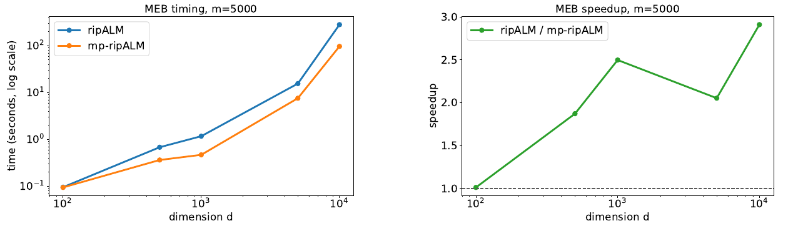

Research
I develop optimization methods that make large computational problems tractable by exploiting structure, controlling inexactness, and connecting rigorous algorithms with modern hardware and AI.
Large-scale optimization: theory & algorithms
Topics ↑Turn mathematical structure into computational speed. I develop Newton, proximal, and augmented Lagrangian methods that exploit sparsity, low rank, and conic geometry. Implementable error criteria control how accurately subproblems need to be solved, connecting convergence theory with efficient computation on GPUs and decentralized networks.
{kind=link}

-
Mixed-precision GPU acceleration for large-scale minimum enclosing ball problems Preprint
2026. arXiv.
-
Fast and effective computation of generalized symmetric matrix factorization Preprint
2026. arXiv.
-
D-ripALM: A tuning-friendly decentralized relative-type inexact proximal augmented Lagrangian method Preprint
2026. arXiv.
-
Convergence of a relative-type inexact proximal ALM for convex nonlinear programming Preprint
2025. arXiv.
-
Nesterov's accelerated Jacobi-type methods for large-scale symmetric positive semidefinite linear systems
SIAM Journal on Scientific Computing 47, no. 6 (2025). SISC, arXiv, code.
-
An inexact Halpern iteration with application to distributionally robust optimization
Journal of Optimization Theory and Applications 260, no. 58 (2025): 1-41. JOTA, arXiv, code.
-
A squared smoothing Newton method for semidefinite programming
Mathematics of Operations Research 50, no. 4 (2025): 2433-3282. MOOR, arXiv.
-
ripALM: A relative-type inexact proximal augmented Lagrangian method with applications to quadratically regularized optimal transport Preprint
2024. arXiv.
-
Accelerating nuclear-norm regularized low-rank matrix optimization through Burer-Monteiro decomposition
Journal of Machine Learning Research 25, no. 379 (2024): 1-52. JMLR, arXiv, code.
-
QPPAL: A two-phase proximal augmented Lagrangian method for high dimensional convex quadratic programming problems
ACM Transactions on Mathematical Software 48, no. 3 (2022): 1-27. TOMS, arXiv, code.
-
On degenerate doubly nonnegative projection problems
Mathematics of Operations Research 47, no. 3 (2022): 2219-2239. MOOR, arXiv.
-
A new homotopy proximal variable-metric framework for composite convex minimization
Mathematics of Operations Research 47, no. 1 (2022): 508-539. MOOR, arXiv.
-
An inexact augmented Lagrangian method for second-order cone programming with applications
SIAM Journal on Optimization 31, no. 3 (2021): 1748-1773. SIOPT, arXiv.
Optimal transport & experimental design
Topics ↑Better decisions begin with the right geometry. I build scalable methods for comparing distributions and choosing informative experiments. Sparse and proximal transport solvers capture relationships between distributions and spaces, while Newton-based design algorithms and probability metrics guide data collection under limited budgets and uncertainty.

-
A provably convergent and practical algorithm for Gromov-Wasserstein optimal transport Preprint
2026. arXiv.
-
Beyond expected information gain: stable Bayesian optimal experimental design with integral probability metrics and plug-and-play extensions Preprint
2026. arXiv.
-
PINS: Proximal iterations with sparse Newton and Sinkhorn for optimal transport Preprint
2025. arXiv.
-
NewVEM: A Newton vertex exchange method for a class of constrained self-concordant minimization problems
Journal of Scientific Computing 105, no. 64 (2025). JSC, arXiv.
-
PNOD: An efficient projected Newton framework for exact optimal experimental designs Preprint
-
A sparse smoothing Newton method for solving discrete optimal transport problems
ACM Transactions on Mathematical Software 50, no. 3 (2024): 1-26. TOMS, arXiv.
-
A corrected inexact proximal augmented Lagrangian method with a relative error criterion for a class of group-quadratic regularized optimal transport problems
Journal of Scientific Computing 99, no. 79 (2024). JSC, arXiv.
-
An efficient implementable inexact entropic proximal point algorithm for a class of linear programming problems
Computational Optimization and Applications 85, no. 1 (2023): 107-146. COAP, arXiv, code.
Optimization, AI & robotics
Topics ↑Connect the adaptability of learning with the rigor of optimization. I develop optimization methods for reinforcement learning, learn parameters that accelerate solvers, and use LLMs for mathematical modeling and symbolic discovery. In robotics, semidefinite relaxations and GPU algorithms turn nonconvex trajectory problems into solutions with computable optimality bounds.

-
OptimAI: Optimization from natural language using LLM-powered AI agents
Journal of Machine Learning, accepted, 2026. JML, arXiv.
-
Accelerating multi-block constrained optimization by learning penalty parameters
Communications on Pure and Applied Analysis, accepted, 2026. CPAA, arXiv.
-
Fast and certifiable trajectory optimization
in Algorithmic Foundations of Robotics XVI, Volume 1: Proceedings of the Sixteenth Workshop on the Algorithmic Foundations of Robotics, Springer Proceedings in Advanced Robotics, vol. 37, pp. 43-65, Springer, 2026. Springer, arXiv, code, Best Paper Award Finalist.
-
From equations to insights: Unraveling symbolic structures in PDEs with LLMs Preprint
2025. arXiv.
-
On the stochastic (variance-reduced) proximal gradient method for regularized expected reward optimization
Transactions on Machine Learning Research, 2024. TMLR, arXiv.
-
An inexact projected gradient method with rounding and lifting by nonlinear programming for solving rank-one semidefinite relaxation of polynomial optimization
Mathematical Programming 201, no. 1-2 (2023): 409-472. MP, arXiv, code.
Papers are grouped by their primary theme. Preprint identifies work not yet published or accepted.